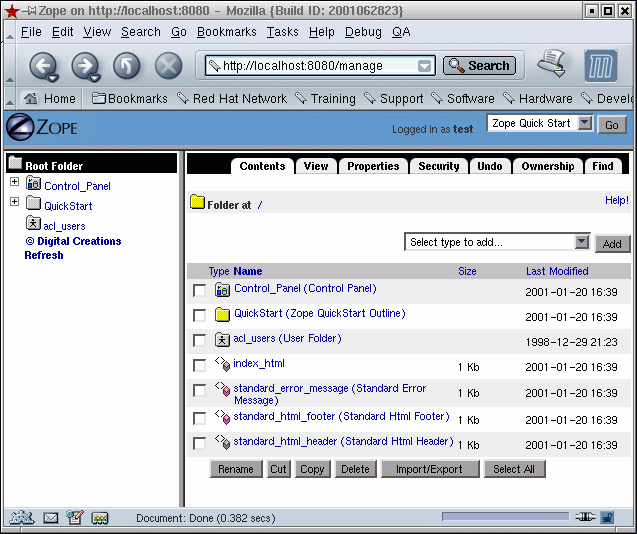
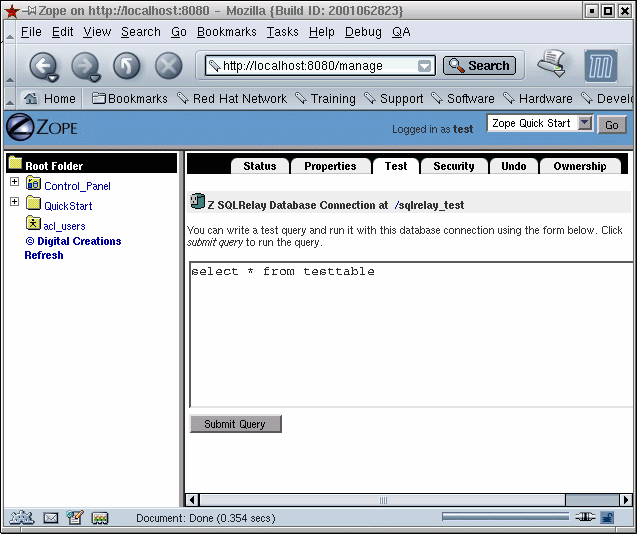
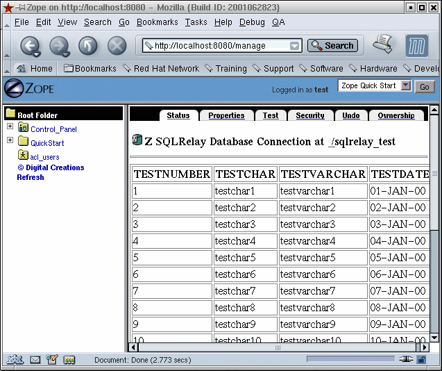
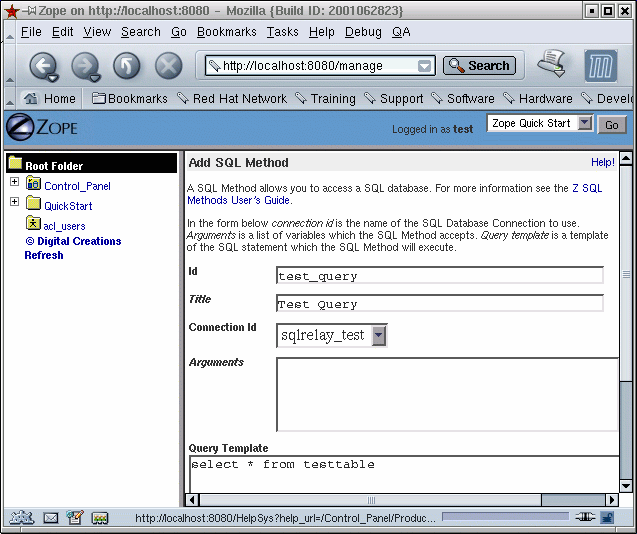
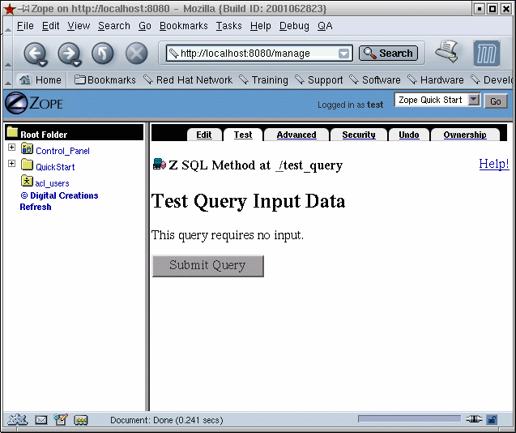
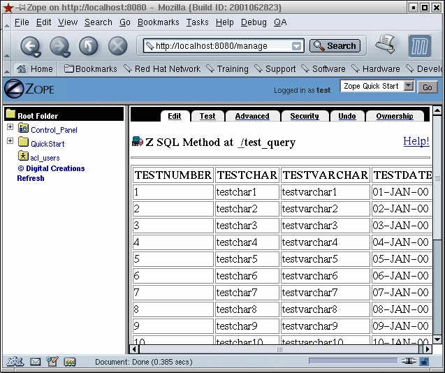

The Zope Database Adapter is called ZSQLRelayDA. Once installed, you can run ZSQLMethods against it like any other Zope Database adapter.
These directions assume that your Zope installation is in /usr/zope and that your Python libraries are installed in /usr/lib/python1.5
If these assumptions do not apply to you then substitute your installation paths for the ones in this document.
To install the Zope adapter, first copy or move the src/api/zope/ZSQLRelayDA directory of this distribution into the /usr/zope/lib/python/Products directory.
Zope needs to know about the SQLClient python module as well. The most portable way to make Zope aware of the module is to create a symbolic link from that directory to /usr/zope/lib/python/Products/ZSQLRelayDA/SQLRelay
The command:
ln -s /usr/lib/python1.5/site-packages/SQLRelay /usr/zope/lib/python/Products/ZSQLRelayDA/SQLRelay
should do the trick.
Now you're ready to use Zope and SQL Relay together.
Creating a ZSQLRelayDA InstanceAfter installing the ZSQLRelayDA, log into the Zope management interface. Do not log in as the "emergency user" (usually superuser), if you have not already, create another user and log in as that user.
At this time, make sure the SQL Relay instance you intend to connect to is running.
Once you have logged in, the "Z SQLRelay Database Connection" product is available in the "Select type to add..." pulldown menu on the right.

To create an instance, select "Z SQLRelay Database Connection" from the pulldown. Replace the default Id and Title with meaningful names and enter the database connection string. Instructions describing the format of the database connection string is described at the bottom of the page.
Click the "Add" button. You'll see your newly created instance.

You can test the connection by clicking on the link to your recently created connection and then on the "Test" tab at the top of the next page. Type a query into the text area.

Click the "Submit Query" button. You should now see your result set.

Now you can use your ZSQLRelayDA instance in ZSQLMethods. Return to the Root folder and select "Z SQL Method" from the "Select type to add..." pulldown menu on the right.
Enter a meaningful id and title and select the id of your ZSQLRelayDA instance from the pulldown. Fill in the "Arguments" and "Query Template" text areas. If you need help with ZSQLMethods, click the "Help!" link in the top right hand corner of the page.

Click the "Add" button below the text area.
You can test the method by clicking on the link to your recently created method and then on the "Test" tab at the top of the next page.

Click the "Submit Query" button. You should now see your result set.

Now you can use your ZSQLMethod in other Zope objects.
Getting the Last Insert ID in SQLiteDatabases with autoincrement or "identity" columns often provide functions which return the "last insert id"; the value of the autoincrement column that was generated during the insert into the database or 0 if no inserts have been performed during the session.
Unfortunately Zope doesn't expose a generic method for getting the last insert id, but when using the SQLite database, you can get the last insert id by running the query:
select last insert rowid